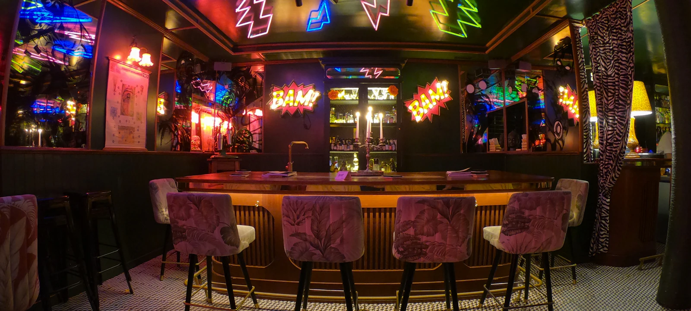

Table booking for a nightclub, run through WhatsApp and Instagram
Guests book tables, pay deposits and report lost items by chatting with "Pooja", an AI host. I built the WhatsApp side first and later took over most of the backend.
- Pooja runs on Gemini with 14 tools. I stopped her leaking context and promising things the club couldn't do, and added cancellations, retries and a handoff from Instagram to WhatsApp.
- The iPay88 deposit flow checks signed callbacks and amounts, and a unique index stops two guests booking the same table.
- I moved the backend from Supabase edge functions to NestJS with no downtime, and added rate limits, health checks and a deploy script that can roll back.
- Complaints and lost-and-found reports are pulled out of free-form chat and each one is filed exactly once.
115 bookings and 133 guests in the first two months